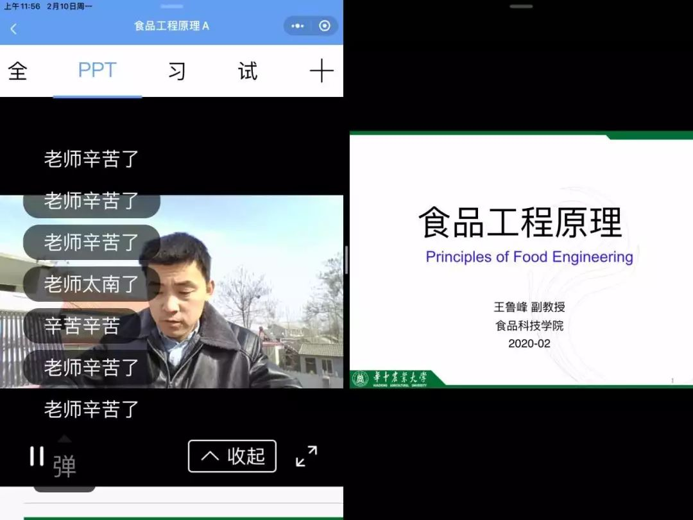

停课不停学，家长们都快被网课逼疯了
原文链接 备份链接 明明开学都推迟了 家长反而更忙乱了疫情之下，不少当爹妈的宅在家，陪娃过着漫长的寒假。 停课不停学，老师当主播，在家上网课，却让不少家长直呼撑不住。一边要在家办公，一边还要参与学校布置的任务，光是每天直播课的花式打卡， …


*************▲ *************2020年春季学期，王鲁峰在老家的屋顶开启了直播，为62名本科生授课。受访者供图
全文共4442字，阅读大约需要7分钟。
肖寒还在网上完成了本学期的第一节体育课——长拳——仅仅是看完了一节课的教学视频。
“老师快退休了，但玩得挺溜的，我想一定是试了好久才给我们上课……特殊时期，网络时代，大家都尽力而为了。”
本文首发于南方周末 未经授权 不得转载
文 | 南方周末记者 张锐
南方周末实习生 杜嘉禧
责任编辑 | 邢人俨
2020年2月12日中午十二点多，华中农业大学食品科学技术学院副教授王鲁峰在山东济宁某村的屋顶上结束了当天的本科生课程——《食品工程原理》。接受南方周末记者采访时，他刚刚从屋顶上爬下来：“屋里信号不好，上屋顶实在是无奈之举。”
在网络流传的答疑课视频中，王鲁峰坐在屋顶的简易桌子前，对摄像头举着教案，在大风中讲解：“有几个同学反映，在能量衡算这一块很疑惑，我刚才可能讲太快，我画了一个图，给大家看一下……”过去，王鲁峰在黑板上为学生授课和答疑，现在，他面前是一个小小的摄像头和屋顶能望见的几棵光秃秃的树。
王鲁峰告诉南方周末记者：“还是有点累和狼狈，好在学生理解。”
根据王鲁峰所在的华中农业大学发布的通知，自2月10日起，各学院统一按校历和课表进行在线教学。
往年，王鲁峰自武汉回老家，过年前后待不到一周，便要返回武汉备课。今年，王鲁峰返乡后成了村里的重点隔离对象，一家人至今隔离在老家中。
“不仅我一个人，还有其他不少在河南、安徽等地的老师也在克服困难给学生上课。”王鲁峰对南方周末记者说。
距离济宁560公里之外，来自河南信阳的汪垒是中国地质大学（武汉）数学与物理学院副教授，负责本学期112人的本科生高数课程。开课前，他买的笔记本电脑终于顺利到货，让他松了一口气。平常用的电脑留在武汉，幸好网络云盘中存有课件和教学资料，同事也可以帮忙扫描教科书和习题册。
他对着屏幕上的大一新生说：“你们都是大学生了，应该自觉一些了，而且你们也知道这门课学分挺高的……”
2月13日晚七点半，华中师范大学新闻与传播学院副教授许玲结束了新学期的第一天课程——早上十点的《城市传播学》、下午两点的《新媒体概论》和晚上六点用英文授课的《媒介与社会》。许玲工作生活在武汉。“我的大部分课程都与新媒体有关，对新媒体较为了解，所以对这种形式感觉比较自然。”
出乎她意料的是，实际上课的人数超过了原定人数，不少人甚至是同学拉进来蹭课的，一些其他专业的、还在国外交换的学生也参加了直播课程。原本容纳45人的线下课变成网课后，听课人数不再受限，“有一些并未选上这门课程的学生也进来了”。
许玲全程没露脸。尽管有学生怂恿她出镜，她拒绝了：“网络上课和平时最大不同，就是不太利于深度思考。这个时候教学露脸，学生注意力容易分散，达不到好的效果，把这些多的因素砍掉，关键性的功能保留。”
截至发稿时，华中农业大学、华中师范大学、中国地质大学（武汉）均以网课正式开课。2月17日后，包括武汉大学、华中科技大学在内更多的武汉高校也会陆续加入网课的行列。

正在上直播课的王鲁峰。受访者供图
1
按照高校网课的一般流程，各学科首先要建相应的课程QQ群或微信群，上传相关学习资料，在群中统一安排上课使用的教学平台——中国MOOC、雨课堂、超星学习通、腾讯课堂等，具体的教学平台使用并无强制规定。
华中师范大学一位大四本科生介绍，云课堂里还有很多录播课和PPT教材，供学生自学。许玲告诉南方周末记者，一些因过年滞留外地的同事由于手边没有合适的设备或资料，现阶段只能暂不开课。
王鲁峰手边也没有纸质教材，用的是之前储存在云端的电子版，学生看的部分资料也是他从网上找来的。
上了几天课后，天气稍微暖和一些，风没有那么大，王鲁峰在屋顶上的直播还算顺利。由于老家没有安装宽带网络，电脑连的是手机热点。网络好的时候，王鲁峰会开一下视频，一旦卡住就切换成语音。“关键还是网速卡，声音变得嘎吱嘎吱的，有时候可能切换不过来。”
王鲁峰告诉南方周末记者：“雨课堂已经崩溃好几次了，全国各地老师都在用，可能人太多了吧。当然，平台很多，有腾讯课堂、微视还有一些其他的。刚才的课，雨课堂上了一半就不行了，我又退到QQ群里面去了。”
汪垒用的也是手机流量，还开通了流量加油包，“现在湖北的运营商有活动，10元10个G，一个半小时的直播大概是1.5G-2G左右，所以还能顶得住”。
汪垒告诉南方周末记者，他同时使用多个平台，超星、QQ直播都用过，一个平台信号不好，等不了就赶紧换另一个试一下。
由于网络拥堵，仍有一些学生始终无法连入。直播讲课时，汪垒还会特地开一个录屏软件，直播过的视频上传到群里，供学生下载和反复观看。
计算机专业大二本科生肖寒告诉南方周末记者，一次直播课时，老师在群里发起关于“电子计算机总体上分为哪两类”的投票，一些学生退出直播间去群里投票，之后因网络问题再也无法进入直播间。肖寒还在网上完成了本学期的第一节体育课——长拳——仅仅是看完了一节课的教学视频。
许玲直播上课的第一天，并未遇到长时间的网络卡顿问题。正在上小学的儿子这些天也在上网课，“家里挺热闹的”，甚至启发了她用孩子的同款软件来上课。
中国地质大学（武汉）水文与水资源专业大二本科生刘露介绍，一些需要分析和计算的课程，平时上课可能跟不上，现在却可以完整记录下来，反复学习，“但缺少那种迫使你去学习的感觉，你可能会玩手机、走神，会一下子忘掉了这节课的存在”。
刘露告诉南方周末记者，上直播课时，总有学生忘了关麦克风，也有人不小心打开摄像头。“一张大脸会突然插进来，傻傻地对着屏幕。有时，有人忘了上课，虽然这个在平时上学的时候很常见，但网课一看就知道谁没到，就打电话叫他来上课。”
中国地质大学经济管理学院教师宫培松告诉南方周末记者，这学期他有三门课程，其中两门课现阶段会采用录播形式，直播课程会使用QQ群分享屏幕功能，不使用第三方平台，“学校本来推荐我们使用的是超星学习通，但是大家都使用的话，服务器垮了根本带不动，所以我用折中的方式，用电脑录视频，这是最简单的方式。”
2
2月12日召开的国务院联防联控机制发布会上，教育部高等教育司司长吴岩指出，根据教育部安排，22个线上平台的2.4万门课程是几年来精心组织培育遴选的好课。教育部不提倡、不鼓励、不建议高校要求每位老师都制作直播课。
一些父母在高校任教的网友表示，父母要学习繁琐的网课操作，无奈之下只能求助于自己的孩子。上网课之前，53岁的郑州大学水利科学与工程学院教授左其亭花了两个半天学习雨课堂的使用方法，学习如何登录直播平台、设置授课模式，发布问题、看答案情况等。
第一次上课，左其亭还是遇到了问题。他不知道怎么设置已回答好的问题，学生回答正确的时候，系统上仍然是错误的。由于操作网络平台容易分神，左其亭一开始上课有些手忙脚乱，“这种模式很容易接受，没有太大的困难，要说困难，可能对年龄较大的教师，熟悉网络平台需要花点时间”。
国内某医学院医学技术专业大四学生张炳坤告诉南方周末记者，第一天上了六节专业课，治疗技术演示课上，授课老师在医院里不仅为班级的七名学生直播上完整节课，还找来了真人进行教学演示，“老师快退休了，但玩得挺溜的，我想一定是试了好久才给我们上课……特殊时期，网络时代，大家都尽力而为了”。
许玲告诉南方周末记者：“我认识的一些教师，包括年龄偏大一些的老师都还是挺会用的。”
汪垒从华中科技大学获得博士学位后，曾在华为工作过一段时间，直播视频是必不可少的软件，因此使用起来轻车熟路。他对南方周末记者说：“就跟微信一样，有些父母不会用，是一个道理。他们觉得麻烦，也不太愿意学习或者操作一个新的东西。”
汪垒介绍，用直播这种实时在线的方式给学生上课，并非唯一选择。网上有很多公开的质量较高的慕课资源（MOOC,MassiveOpenOnlineCourse,即大规模开放的在线课程），老师也可以让学生自行观看。
“你需要通过一些方式跟学生互动和答疑，指导、跟进他的学习进程。不可能丢给学生一句话，然后啥也不管、啥也不问，这样肯定不合适。按照课表，慕课你要听多少个，然后根据他们的进度，还要有作业。”
汪垒的新笔记本电脑是可触屏的，方便他上课时进行涂写，过往的黑板如今被电脑屏幕替代，除了学生看不到他的脸。课程结束后，汪垒还会在线询问学生问题，统一收集后第二天通过录屏的方式解答后，再传到QQ群中。
高校开课之前，小学和中学的直播课程早已开课，网络上出现了各种声音：网课太欺负人、大型网课翻车现场……相关话题也多次登上微博热搜，移动办公平台钉钉还被小学生集体打了低分。
王鲁峰对南方周末记者说：“我认为可以接受高中，初中及以下网课的必要性不是太大，或者手段有待斟酌。”
在他看来，录播可以作为高校教学的一种补充手段。“若干个短的录播还是可以接受的，你要完全不管了，放那录播，像看电影了，教学互动缺失，意义不大。”
许玲也不太喜欢录播这种教学方式，“因为自己对着电脑讲，得不到学生的反馈”。
3
左其亭一开始看不到学生的表情，无法借助肢体语言和面部表情，难以迅速调动激情，又因为不受干扰，讲课速度不自主地加快。他最担心的是学生听不懂、积极性不高，“不过从我讲课情况看，学生的反馈还是不错的”。
王鲁峰带的是62人的本科大班，这是他第一次给这些学生上课。“学生能看到我的PPT，听到我的声音，如果开视频的话，他们也可以看见我。但互动很受影响，板书也困难。整体教学效果还是不如传统课堂教学。”
汪垒一直赞成学生自主学习。“现在的教育资源非常好，如果你觉得我们讲得不好，或者你觉得网络卡，那么你可以自己到网上去学，B站、大学生慕课、网易公开课……上面都有很多资源。你想学习一门知识，在这个时代不是一件难事，相反很容易。有的学生反映，网课不是很好，不是很容易接受。我觉得只要你想学知识，这都不是理由。”
每次上完网课，汪垒都会布置作业，学生做完之后，拍成图片，由学习委员压缩后统一发给他批改。汪垒发现，很多学生的作业完成得非常认真，笔记也做得很好。有学生私下发消息给他：“我特别想回去上学，以前正常放寒假的时候都盼着寒假长一点，结果今天真长了之后就突然发现特别想回去上学。”
汪垒告诉南方周末记者：“我要是他们，很有可能就划水，但是相反他们跟我发消息说特别想回去读书，天天在家里待着发慌，这让我特别受触动。”
但一些商家仍打出了“网课代刷”的广告，包括超星学习通、智慧树等在内的多个平台，宣称“专业刷课，考试包过”。南方周末记者联系上一个代刷商家，该商家表示，需要告知学校、账户和学习平台，按照集数定价。在对方出具的截图上，还标有红色的公告：智慧职教价格大幅下滑，欢迎下单。
上了直播课后，许玲最大的感受是：“我要想办法和他们互动，不能自己在那里唱独角戏”。讲到一个知识点，许玲会有意识地停下来留些时间询问学生的听课效果。这时，学生会通过打字或者开麦的方式表达意见。“有的孩子平时不太说话，反而这个时候比较敢说了，我跟他们说，你们不要带着压力来上课，这是很轻松的课程。”
正式上课之前，许玲会先与授课的三个班级联系试课。“你能感受到他们学习劲头很大。”许玲告诉南方周末记者，“我能感受到，所以我在每个课堂跟他们讲，你们需要放松，我也会帮助你们逐渐进入状态。”
直播时，一些“蹭课”的学生通过开放式链接进入课堂，就像线下“蹭课”时学生从开放的教室门口走进来一样，现在，他们只需要点击许玲发送的邀请链接。
（应受访者要求，肖寒、刘露、张炳坤为化名）

征集

《南方周末》现向所有身处新冠肺炎一线的读者公开征集新闻线索。我们欢迎武汉及周边城市医患联系记者，提供防疫前线的一手资讯，讲述您的新春疫情见闻。若您不在武汉，但您身处之所也有与疫情相关的重要新闻线索，亦欢迎您与我们分享。疫情仍在蔓延，南方周末将执笔记录每位国人在疫情面前的希望与困境，与广大读者共同面对疫情。祝愿所有读者朋友们，新春平安。线索可直接给本篇文章留言，格式为：【线索】+内容+您的电话（绝对会对您的个人信息保密）
戳击下面图片 继续阅读专题


文章已于修改
原文链接 备份链接 明明开学都推迟了 家长反而更忙乱了疫情之下，不少当爹妈的宅在家，陪娃过着漫长的寒假。 停课不停学，老师当主播，在家上网课，却让不少家长直呼撑不住。一边要在家办公，一边还要参与学校布置的任务，光是每天直播课的花式打卡， …
原文链接 备份链接 如何在老师与学生之间、学生之间相互不见面的情况下， “保证在线学习与线下课堂教学质量实质等效”？首先需要申明：我说这是个好问题，不是说我对于这个问题有个有把握的、确定准确的答案，而是说这个问题能够引发一系列关于高等教育 …
原文链接 备份链接 为什么这次在线教育又火了？ “到了2020年，老师和学生都不用去学校了，在家里就能上课”。这是2000年梦想杯作文大赛特等奖节选中的一句话，没想到在二十年后的今天却由于新冠肺炎疫情影响而变成了现实。 近年来在线教育被社 …
原文链接 备份链接 全文共3557字，阅读大约需要7分钟。 “停课不停学”不等于上网课，上网课也不是简单的课堂转移。广义上的学习，是让孩子在生活痕迹中思考本质，借助互联网和信息化教学资源建立属于自己的精神天空。 教学形式的演进无法代表教育 …
原文链接 备份链接 经济观察网 记者 李静 实习记者 刘兰 受到疫情影响，近期多地学校采用“线上授课”的方式响应教育部疫情期间学校“停课不停学”行动。这一行动，牵扯众多，也包括正在复习冲刺阶段的高三备考生们。 疫情对于教学工作、班级管理影 …